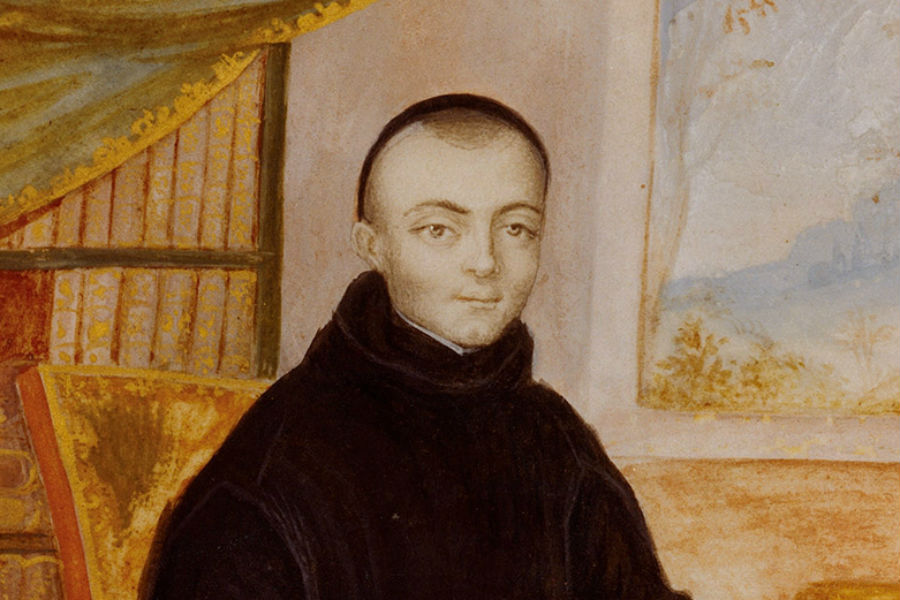
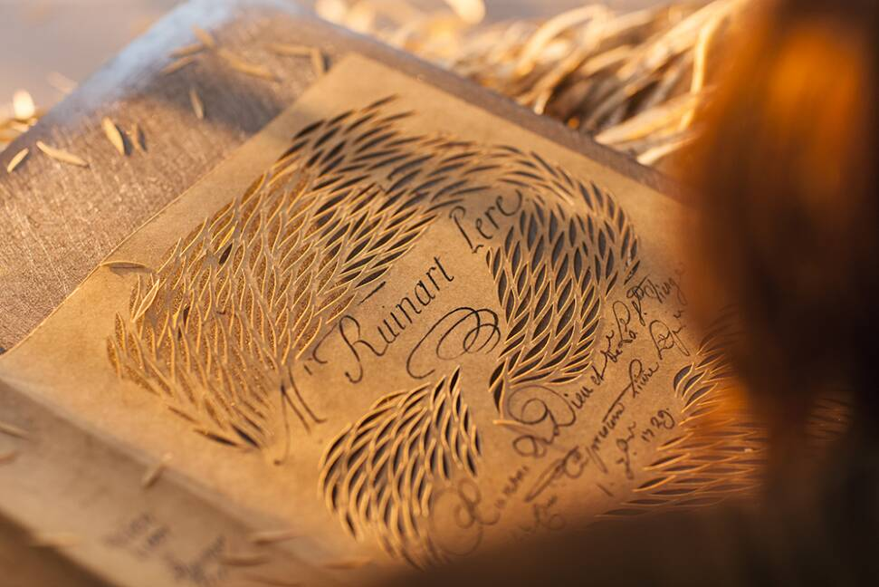
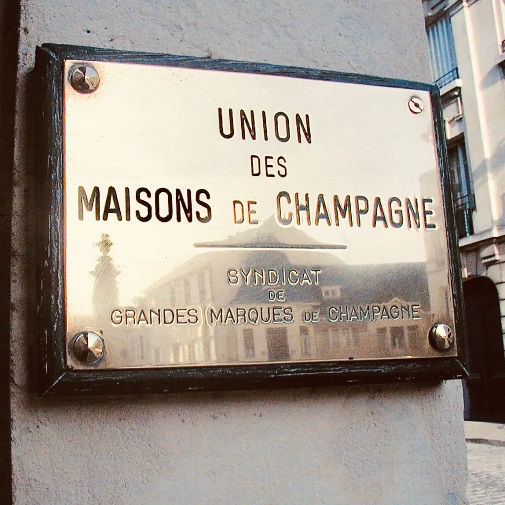

Les maisons de Champagne existent depuis l’époque du moyen-âge, plus exactement depuis la création de la première maison de Champagne nommée “Ruinart” en 1729. Aujourd’hui, ce sont des entreprises agricoles et industrielles.
Remontons dans le temps, jusqu’en 1729 pour découvrir l’histoire de la fondation de la première maison de Champagne et du développement du commerce champenois.
Histoire de la fondation de la première maison de Champagne
Thierry Ruinart, l'initiateur
Dom Ruinart, noble et marchand de drap est l’oncle de Nicolas Ruinart. Grâce à ses différents voyages en Europe, il a pu rencontrer Dom Pérignon et Dom Mabillon, qui lui confièrent de solides connaissances sur la champagnisation. Connaissant les enjeux de la production et de la commercialisation du vin champenois, mais aussi très amoureux de sa terre natale, il décide, lors de ses retours à Reims, de partager ses connaissances concernant le commerce du vin champenois avec Nicolas Ruinart. Celui-ci abandonna peu à peu le commerce de draps pour se tourner vers celui du vin Champenois

La fondation de la Maison de Champagne
Avant sa mort, en 1709, Dom Ruinart passe une grande partie de son temps à développer le commerce de son frère partout en France, grâce à ses voyages et à ses relations. C’est en 1729, 20 ans après la mort de son frère, que Nicolas Ruinart fonde la première maison de Champagne portant le nom “Ruinart”. Bien après, d’autres ont suivi l’exemple de Nicolas Ruinart, tels que Edmond Ayala ou encore Peter Arnold Mumm, en créant leur propre maison de Champagne.
Ce livre de comptes, consacré à la mousse, marque la naissance de la première Maison de Champagne.

La montée du commerce de champagne
Très vite, le vin champenois gagnait de la notoriété et de la valeur. Beaucoup de producteurs ont alors commencé à utiliser le mot “champagne” afin de mieux vendre leur vin mousseux.
Face à cette situation, trente-cinq maisons ont décidé de s’unir, en 1882, afin de lutter contre ces usages abusifs. Cette union est nommée “l’Union des Maisons de Champagne”, ayant comme but de protéger le commerce de vin mousseux de Champagne
